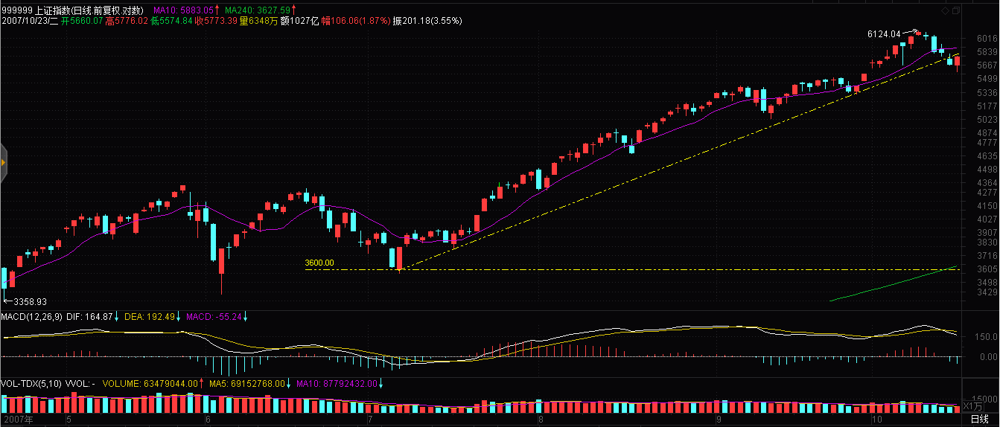
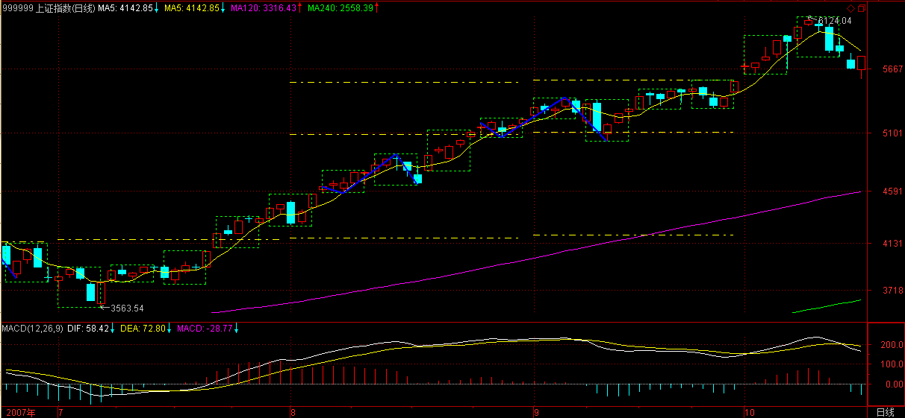
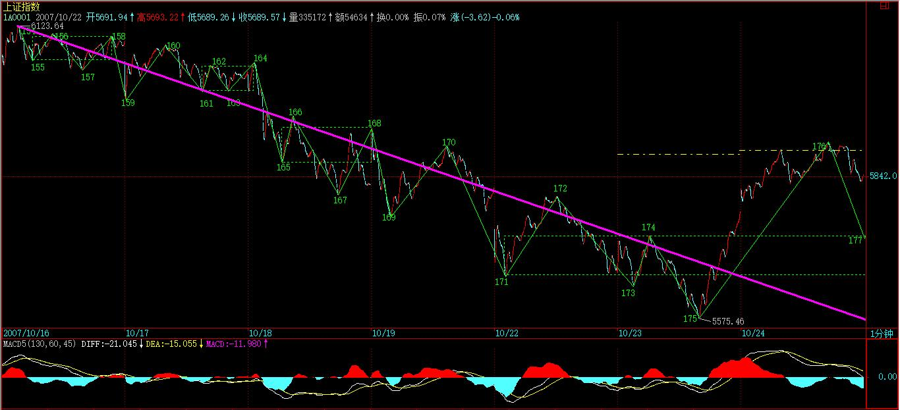

(2007-10-22 21:42:06)
以下都是梦话，千万别相信，相信者脑子有毛病。【韶山映山红】博客正文默认是宋体18号黑色R70G70B70，这一句是宋体56号绿色R0G153B0加粗。】
说点老皇历，让各位都北大北大。
干这活的手法，就算现在的证券法算来，也是完全没有一点违法的地方，【韶山映山红】也就是说，其他的一些操作，要么现在不许了，要么当时就有问题。】这绝对是一个经典案例，也看看股市里是如何做顶的。
当时要干的事情，就是要把一股票的货出掉，而且还是不是现价，必须在某个位置上。【韶山映山红】任务是拉高到某个位置之上去出货。】
这不算难，关键是持有也就30%多，已经上涨N倍，【韶山映山红】只有30%多的筹码，控股程度不高，甚至属于跟庄，在已经拉高之后，再拉高就困难了。】而且里面有不少小家伙的老鼠仓，多的有10%。【韶山映山红】老鼠仓多的有10%，也就意味着，自己人的老鼠仓总量，可能和正式仓等量。这样，从筹码角度看，近似控盘，实际上却是很危险的失控状态。】由于这游戏最终把一所谓的牛人给套住了，现在这牛人还在市场上混，最重要的是，这股票这么多年都没回到过当年的高位，所以为了不让那被套住的中年男人知道后有磨墙的心，更为了保护北京的文物，本ID就不说当时的价位和股票了。【韶山映山红】可以八卦一下。】
【韶山映山红】桃花博客配图。】
先把1/2的筹码集中调到一个最多八卦人的证券部，【韶山映山红】不到20%的筹码，摆出游资操作的架势。】然后，告诉他们，过三周内要陆续调N亿来，【韶山映山红】下面说股价“N元”，也就是说，调来了至少几千万股的炒作资金。】很认真地找了人去谈手续费分成问题，而且要求最高的比例，特别强调了对倒时比例要更高，【韶山映山红】强调对倒，摆出坐庄的架势。】注意，去谈的人也不知道想干什么，只是告诉他要在那边干点活，找一个成本最低的。【韶山映山红】去谈的人也不知道想干什么，做戏也要极其认真。】
然后，该股就从N元开始异动起来，【韶山映山红】这个20%的拉抬，自己不出力，靠释放消息推动。】再起来20%后，就在别的证券部开始出，【韶山映山红】明修栈道，暗度陈仓。】但手法很特别，总是在低位出，出了以后一副给夹空痛不欲生的样子，关于某股票被人抢筹码的消息就此流传。【韶山映山红】在低位出货的特别手法，假装洗盘失手被人抢筹码的假象，不损伤跟风盘的积极性。】
接着，把出的钱以及部分其他的钱提前划到第一个证券部，然后再告诉他们，更多的钱还要划过来。【韶山映山红】借力打力，保持坐庄的架势。】
很快股价就比开始上涨40%了，【韶山映山红】这个40%的拉抬，依然是自己不出力，还趁机出货。】继续在其他地方逢低出货，被彻底夹空。这一下戏演得连老鼠仓都知道损失无数筹码，要压盘把货补回来，老鼠仓也开始大幅度增仓。接着，已经不用逢低出货了。只要压单，就给扫掉，好过分呀。【韶山映山红】把货出给老鼠仓们。】
这时候，开始在第一证券部谈透支问题，说要用筹码压钱，希望是1比2，但对方说他们最多只能1比1.5，因为最近这股票涨太多了。【韶山映山红】自有资金那么多不动用，反而找人家谈透支问题，假装还要打大战。】所以让人很气愤告诉他们，找了一个可以1比3透支的，马上就把筹码转了一半去别的证券部，然后对方就开始很恐慌地要挽留我们。其实，是别的地方出得差不多了，需要筹码。【韶山映山红】找借口转移筹码。】
最后一天，股票在三周多点上涨了70%多，那一天早上，一开盘，在买盘涌起的那一下，最后的屠刀开始了，所有剩余的筹码，一起涌出，具体过程就不说了，只是当天是跌停的，当然，那天也是巨大无比的量。【韶山映山红】这次出货应该是第一家证券部的那一半筹码。总量的1/4。】
最后，派人和那第一家证券部说，不想玩了，你们那里风水不好，不能为客户保密，消息封锁不住，让我们被人砸盘，套住，亏死了，这里的资金要去别的地方救火去，走人了。【韶山映山红】光明正大的抽逃。收场还是不忘做戏。】
只想说最后那股票的命运，就是从最高位下跌了90%以上，至于比最开始的N元下跌了多少，大概不是一个困难的问题了。
【韶山映山红】桃花博客配图。】
注意，这次游戏，之所以经典，就是在整个做顶过程中，根本没拉抬过一笔，都是分批出货，最正常的手法，谁都说不了有任何违规的地方。而且，也没说任何一句影响股价的话，那么为什么成功了？只是因为那些人的贪嗔痴疑慢。
最绝的是，该股后来一直翻不过身来，多杀多的，【韶山映山红】把大资金套在高位了，只剩下小资金，就窝里斗，多杀多。】自从最后一天后就从来没买卖过该股，但该股却一直下来，甚至后来2245点2001年的历史高位，也没靠近过那历史高位。【韶山映山红】 2001/06/14上证指数创当时的历史高点2245.43，之后是4年熊市。 】
有些傻瓜总是说，什么庄家打压，典型的脑子进水。【韶山映山红】无利不起早，除非吸筹，庄家不会打压股价的。】为什么散户、小庄家、老鼠仓的多杀多就不可以让人死得一点脾气都没有？【韶山映山红】没有资金参与的股票，只有存量资金在里面倒腾，多杀多，可以让人死得一点脾气都没有。】
当然，做顶的手法千百样，本ID也玩过无数的花招，有时候一顶就是一顶，有时候一顶不做一顶，【韶山映山红】桃花博客注：（单顶，双顶，三重顶，复合头肩顶）】千变万化。兵者，诡道，股票又何尝不是？
大盘的顶部和个股的顶部不同，要复杂得多，因为集中其中的分力更多，所以其合力当然要更复杂。一般来说，大盘的顶部都不会是简单的图形，都是十分复杂。而且即使真的形成，最后破位前反而要有很多的犹豫，越大型的顶部越是这样。
【韶山映山红】桃花博客配图。】
大盘的顶部都是折腾出来的，所以一般在大盘顶部时，反而机会多多，为什么？因为很多不死心的人，会不断折腾，板块个股，跳来跳去，那些认为大盘顶部一形成就一下死掉的，都是脑子水太多的。【韶山映山红】大盘顶部多有震荡的方式。】
个股的顶部，大多都不复杂，除非是很多人参与的大型股票，原因和大盘的一样，只是相反，就是分力少，对比太明显，所以复杂不起来。【韶山映山红】个股顶部少有震荡，多是背驰甚至小转大的方式。】
当然，顶部是有级别的，一个中期顶部，中期调整后，就不是顶部了，所以顶部以后，也不一定是世界末日。
但顶部以后是否世界末日，这是走势今后的发展决定的，如果你对任何顶部都想长线一把，那么，最终的命运多数是被股票上上下下地面首了，真正解决问题的，还是要通过本ID的理论去分清楚级别，按照买卖点去操作。
必须注意，无论什么花招，最终合力的结果还是买卖点，买卖点是不患，任何庄家、大资金，包括本ID本身，都不可逃避。
所以，对于散户来说，其实不需要知道里面的故事，而只要看好走势，一切就尽在把握中了。【韶山映山红】里面的故事，散户也无从知晓，也只能依靠走势的技术分析。虽然被动，却是最优选择。】
触目惊心的现实
市场的大手笔远远出乎我的平庸的想象力
2007-10-22 22:13
[匿名] 被北大晕了
说点老皇历，让各位都北大北大。
==============================
这里的北大是见识见识，开开眼，笑一笑，赏玩。
而下午所言股市北大，猜测是调整，空了，跌了，折腾开始了
2007-10-22 22:26
[匿名] 新浪网友
最好的风险教育课
2007-10-22 23:06
[匿名] 不想飞
在股市里，死亡才是最大的卑鄙，生存就是最高的荣耀，一节亏钱的还骂人就是最大的卑鄙者。哈哈！
2007-10-22 23:42
[匿名] 不想飞想爬
在股市里，死亡才是最大的卑鄙，生存就是最高的荣耀，一节亏钱的还骂人就是最大的卑鄙者。哈哈！
————————————————————————
卑鄙是卑鄙者的通行证，高尚是高尚者的墓志铭！
2007-10-22 23:45
[匿名] 乐土
没搞准节奏,却搞坏了心态.
坏了心态就骂人,那就还有可能搞不准节奏.
2007-10-23 00:26
[匿名] 新浪网友
无论你在其他方面如何成功，到了市场里，赢输就是唯一标准，除此之外，都是废话。
输了还骂人的,别在这里丢人现眼了,自己反省去吧.反省了,说不准还有机会
2007-10-23 00:59
[匿名] 骏马
缠师说的是000938清华紫光!
2007-10-23 08:14
[匿名] 新浪网友
这故事几年前就听朋友说过。估计不止一个人说是自己做的。
2007-10-23 08:54
[匿名] 春雨秋花
名词解释一下：北大－－面首，清华－－怨男。
哈哈，
2007-10-23 08:56
[匿名] 混沌一片
缠主说的都是大资金超及大资金,机构与机构干的事,打仗\\计谋\\较量.小散们躲远点,但小散们躲的开吗?水太深,小散们的心迷茫,眼浑沌.
2007-10-23 09:00
[匿名] 新浪网友
今天终于把该了结的都了结了，虽然没什么盈利，但是心里甚是安慰。奇怪的是为什么还有那么多人拼命想着抢反弹呢？我还是听姐姐的话，先休息休息，现在硝烟四起，为什么不等到尘埃落定呢？我们现在还只是棋子啊，左右不了什么，甚至自己的心。所以放下吧，放下是福
2007-10-23 11:29
夜雨MM来了没？
我再看了课程，又有点晕了，是不是至少是这样：
1中枢=3线段=9笔=36K线
也就是说一个日线的中枢至少要36天才能形成？？
好象不对头啊？
2007-10-23 11:24
吓跳，不是这么机械的理解，三段是最基本的，但不是一定要形成这么多笔，这么多线，会有很多机会变形的，但如果盘整时候越长，形成的中枢级别越大，吸引力也越大。
2007-10-23 12:45
600139今天无量跌停，这就是姐姐理论的伟大之处，保证你在高位轻松走人，后面的跌跟你是没关系的，没有走的，不能怪庄家，只能怪自己了。
看来，我又说对了一支股，小级别转变成大级别现场版演出，为什么对自己的股无法这么冷静操作，是因为自己的贪嗔，会影响自己的操作心态。姐姐的理论是没有问题 ，只是自己的期望，心态等会影响操作。
2007-10-23 13:29
【韶山映山红】600139绵阳高新，2007-04-11变更为*ST绵高，2009-06-04变更为西部资源。】
现在股份价格，值不值，这才是持有的关键。
我个人认为值得持有。因为华润的代价，差不多是10元每股了，干活的人，买入原始股是将近10元的价格，我们什么事情都不干，坐轿子的人，用20元买入三九值不值？问清楚这个问题，就可以决定操作。
什么基金，他不想要，到企业实现成长了，他自己会高价来抢了。
2007-10-23 13:48
999，是可以随时停的。我认为，华润认为已经可以保证股改通过了，就可以随时停了。呵呵
2007-10-23 14:15
买股别问我了，我不好回答了。这时候总是危险的时候。想偷就偷一把，要快进快出。
2007-10-23 14:26
[匿名] 不想飞
[匿名] 影子
小飞偷吃什么了?我刚才吃了一大口神华,呵呵...
＝＝＝
我偷吃了三个宊币，一个跟你一样，一个中铝，一个600078,资金分三份不容易被人发现，不想被人捉住尾巴打。
2007-10-23 14:37
[匿名] 不想飞
节奏踏错了，今天静下心来好好整理下，接下来了节奏不能再踏错，再踏错自己也不能原谅自己，得打PP。
祝：各位都好运连连1
2007-10-23 15:11
用户0
我宁愿脑子有病也不愿意相信这篇，心中涌起一股巨大的失落，说好的买卖点呢，什么是真小人 什么是真正的伟丈夫，开悟即知
2012-3-19 23:04
兵者,诡道也。故能而示之不能,用而示之不用,近而示之远,远而示之近。禅师退而示之进，高明
2016-1-6 13:34
(2007-10-23 15:40:39)
昨天说得很清楚，1分钟下跌底背驰后，一轮反弹将展开。
今天的技术走势十分标准，
更重要的是，这里是3600点上来的上升通道下轨位置，【韶山映山红】530的盘整之后的重新上涨，大约起始于3600点。不能守住上升通道下轨就是跌破趋势了。】

又是缺口位置，【韶山映山红】前面有两个连续的缺口，这一天的回踩，补了高位缺口的一多半。】
因此技术上必须要有这次反弹。【韶山映山红】如果是调整，就要有个反弹来证明。否则就是转势了。】
在前面已经明确说了，空头现在的策略，就是逢反弹必抢的，抢了以后，等不死心的涌上去没力时，才有筹码喂饱人。注意，这里本ID又有金针度人，【韶山映山红】宋.释师观《偈颂七十六首》：“唇上碧斑宾豹博，舌头当的帝都丁。鸳鸯绣出从君看，不把金针度与人。”金·元好问《论诗》诗：“晕碧裁红点缀匀，一回拈出一回新；鸳鸯绣了从教看，莫把金针度与人。”】
不是任何反弹都可以抢的，只是做顶行情中的反弹可以抢，一旦顶部完全形成，破位后，那么反弹就没必要抢了，让别人去多杀多就可以，除非有特别大级别的买点。
这是一个十分微妙的关系，但一般脑子进水的都不大明白。因为在那些人眼里，反弹都是一样，而实际上，在做顶行情中搞反弹，只是为了促进顶部的形成，而且也为一旦顶部形成不了而准备好后手。【韶山映山红】所谓准备好后手，就是在做顶失败，顶部震荡变成上涨中继的时候，不至于踏空。实际上是顶部背驰之后的降级操作。】
做盘就如同下棋，必须有大的想法，而不是看一步走一步。着着有后手，这样才能稳胜不败。【韶山映山红】坚持到最后的策略就是选择三卖确认顶部之后再清仓离场。】
以上的话，都是给现在技术还行的人看的，【韶山映山红】技术差一点的，还是背驰就离场。】这里的标准就是，空仓或者目前的市值比6124.04点那天高的人。【韶山映山红】“空仓”就意味着背驰已经离场。“目前的市值比6124.04点那天高”就意味着背驰之后还在打短差获利。这两条都是技术还行的标准。】其他人，根本没资格抄什么反弹，先借反弹把市值恢复上去再说。
这如同跳舞，节奏已经错了，就不能错上加错，先把节奏调整对再说。【韶山映山红】节奏就是买点买、卖点卖。】
反弹的压力，首先是5日线，然后是10日线，如果这两条线都不能突破，那么这个反弹就将构成第二类卖点，后来是什么就不用说了。

注意，中石油上市，会给市场又一个兴奋的借口。但关键是政策面的趋向能给多少时间，中字头会借此兴奋一下，今天这已经有点表现。另外，二线蓝筹在反弹中也会表现的，例如科技股以及其他题材股之类，因为前面根本没动，所以有所轮动也很应该，但这些股，大面积表现的可能性不大。
本ID已经反复强调，顶不是一天搞成，这里有一个微妙的潜在语：最后破位之前，最终套住谁，现在还没有定呢，所以，6124.04点逃掉的，也不要高兴太早，一旦反弹做错，最后来个站岗大换班，那是常有的事情。
所以，现在的反弹操作，一定要谨慎，请量力而行
最近很忙，刚才一边写东西一边就电话不断，所以没时间回答问题了，抱歉。
先下，再见。
【韶山映山红】本篇博文，全文绿色R0G153B0加粗。】
(2007-10-23 22:37:58)
太累了，没时间写帖子，说两句闲话。
本来是可以写帖子的，结果晚上谈事回来，看到下面搞的合同，几乎把本ID看晕了，完全不是本ID的意思。本ID只好浪费不少时间，等于重写一遍合同，这种事还要亲自干，真是晕。
那些破事就不说了，说实话，最近本ID是越来越忙，明天下午又是一个谈判，别人专门从香港飞过来，还是一群人，不见不合适，所以，这博客如果有照顾不周的地方，请原谅。
当然，本ID会尽力坚持下去，如果实在太忙，也请各位谅解。下周又有一件剪彩的事情，必须出一次差，不去不行。本ID现在都有点担心，万一铺的事情太多，以后要撒手不干了，可能还不是简单的事情。
人在世上，总难如愿的。想安静，就太与世隔绝。一入红尘，很多事情就身不由己了，毕竟事情要好来好去，不可能干一半就撒手不管。
吃饭时，有一电话又来勾引本ID，说软银投了某某项目，让本ID也投点，明年就上市。一个老熟人，本ID又不好推，只能说先把项目资料发过来，看了资料，如果不错，不投不合适，投了又多一件事，无聊呀。
刚才改合同的时候，突然觉得很累，现在的事情有点收不住了，总之，本ID有一个心愿，40以后完全转向文化的建构，现在到40还有太多年了，怎么熬啊。
对不起，一时无聊，胡乱唠叨，抱歉了。
【韶山映山红】本篇博文，全文默认字体。】
(2007-10-24 15:14:14)
马上要去见香港来的一群无聊人，只能快速说两句。
昨天明确说了，看5、10日线，今天，10日线的阻截明显。【韶山映山红】跌破10日线之后再反弹，10日线就成为了反弹的阻力线。这一天上冲10日线后回落，形成长上影，所以说“10日线的阻截明显”。】
不过，由于今天在该线下形成一个1分钟中枢，因此短线走势，就看这1分钟中枢的第三类买卖点情况。如果能有第三类买点，那么将再次冲击6000点。【韶山映山红】飞狐历史数据，这天没有形成1分钟线段中枢。】

【韶山映山红】从86课的描述来看，这里说的1分钟中枢是当日高位盘整形成的接近笔中枢的结构。】
【韶山映山红】缠师的线段划分有一些间断，其中140-186的线段划分不是缠师原文的，是我根据现有的历史数据划分的。现在的历史数据和当时的实际情况可能有出入，这里也可能构成段中枢。】
如果短期没有特别消息，这个反弹应该继续延续，只是以横盘还是以继续上冲的类型选择。由于那资金解冻在后面，这么多资金，不骗点进来太对不起大家了，所以，只要没有突发性消息，反弹至少能延续下去把解冻资金骗点进来站岗。【韶山映山红】以前打新，要冻结申购额度的钱在账户里。中国石油2007.11.05上市，募集资金668亿元，冻结打新资金3.3万亿元，刷新当时A股纪录。当时沪深两市的总市值大约是30亿元。缠师说的“资金解冻”就是这件事。】
个股没什么可说，都告诉各位中字头了。当然，这种形式是最消磨多头意志的，指数涨，却没有赚钱效应，这就是空头最爱干的事情。
如果特别的消息一直不出来，那么在没什么事干的情况下，空头不排除会再次上演拉指数的好戏，把消息给拉出来。
短线技术，明天就看今天这1分钟中枢的震荡情况，如果出现第三类卖点，那就有二次探底的需要。
就算是反弹，也可以是二次探底后再展开的，所以现在对于反弹类型的选择，是可以有很多种的，判断标准就是这1分钟中枢的震荡情况。
注意，再次强调，最后指数的破位，必须有消息配合，没有的话，最多只能箱体，除非这箱体延长时间太长，把所有搞怕了才可能破位。
对不起，要走了，先下，再见。
【韶山映山红】本篇博文，全文绿色R0G153B0加粗。】
[匿名] 不想飞
太夸张的你们，这么快就把好位子给占了。
2007-10-24 15:38
[匿名] 不想飞
[匿名] 新浪网友
看了几天,觉得博主是个性格很矛盾的人.这样的性格没法不累吧.人应该生活的简单一些,尤其不能自我定位过高.关于你这一阶段对市场的看法,其实是有很多的不符,证明你也不是神仙.
其实有很多人有和你一样的猜测,只是对自己的观点留有余地罢了,更没必要去夸大.做个平凡的人很好其实很好啊.望博主三思
＝＝＝
人生就那几十年，为什么一定要平凡呢？“高处不胜寒”不是高处寒冷，而是没有更高处才会觉得寂寞。
2007-10-24 15:49
[匿名] 不想飞
阿进 删除此人所有评论
2007-10-24 15:26:02
知道了.
那我继续偷吃危险不大...
======================
吃完记着擦嘴.
2007-10-24 15:51
[匿名] 不想飞
[匿名] 米兰花开
匿名] 不想飞 删除此人所有评论
2007-10-24 15:38:14
太夸张的你们，这么快就把好位子给占了。
========
不想飞老师:
老师,我今天比较郁闷.呵...昨天抢反弹的股票没有选择好噢....
当时真的在28与50上面犹豫了一下,还是选择了二.三线的一支农业与钢铁.
可今天不仅没利润.害得我还小亏1%.
＝＝＝＝
你是小散，给自己来点主力思维，天马行空的猜想。
看得更远是因为你站在更高处看，而不是自己眼睛有多厉害。要是因为自己是小散而天天小散思维，那不可能看得更多。
人总以为自己很聪明，以为站在低处也能看得更远，这合理么？
2007-10-24 15:59
[匿名] 不想飞
[匿名] 不想飞 删除此人所有评论
阿进 删除此人所有评论
2007-10-24 15:26:02
知道了.
那我继续偷吃危险不大...
======================
吃完记着擦嘴.
＝＝＝
汗！这位“大哥”借用我这个网名，骂人我实在不怎么介意。但是拿来蒙人好像太过份了点，你觉了呢？
2007-10-24 16:04
[匿名] 不想飞
[匿名] 请教不想飞 删除此人所有评论
请教不想飞:今天一分钟形成的是一分钟中枢还是五分钟中枢？？？？？
＝＝＝＝＝
一分钟中枢。
2007-10-24 16:30
[匿名] 不想飞
[匿名] 飞雁
人生就那几十年，为什么一定要平凡呢？“高处不胜寒”不是高处寒冷，而是没有更高处才会觉得寂寞。
－－－－－－－－－－－－－－－－
飞姐：我想“高处不胜寒”是由于曲高和寡的缘故吧？
＝＝＝
文字这玩意嘛，说它好也还可以，说它不好还真不好，自从人类有了文字，人类几乎就是文字的奴隶。
下了，好运！～哈！
2007-10-24 16:37
本课目录
教你炒股票85：逗庄家玩的一些杂史3上升通道下轨支持如期反弹太累了，没时间写帖子，说两句闲话10日线如期阻截